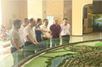

参观中国泡菜博物馆
8月16日， 江南大学食品学院副院长、博士、副教授、硕士生导师、中国粮油学会玉米深加工分会秘书长李兆丰一行莅临眉山“中国泡菜城”。
在眉山“中国泡菜城”招商局的陪同下，参观了全国唯一的中国泡菜博物馆、惠通食品有限公司和川南食品有限公司。 随后，李兆丰一行在“中国泡菜城”管委会三楼会议室就“园区发酵工业现状与发展趋势”“泡菜产业与食品健康、食品营养的发展关系”等内容进行座谈。李兆丰首先对食品行业的情况做了简要分析，并对东坡泡菜给予了高度评价。予了高度评价。
8月29日，区委书记李明舟率队专题调研眉山·中国泡菜城项目经济推进情况，研究解决当前遇到的困难和问题，进一步推动项目落实，促进园区发展，确保各项目标任务顺利完成。区委常委、副区长廖小宁参加调研。今年上半年，眉山·中国泡菜城党工委、管委会上下齐心，团结务实，敢于担当，主动作为，顺利实现了“双过半”，项目经济工作取得了突出成绩...
8月29日，区委书记李明舟率队专题调研眉山·中国泡菜城项目经济推进情况，研究解决当前遇到的困难和问题，进一步推动项目落实，促进园区发展，确保各项目标任务顺利完成。区委常委、副区长廖小宁参加调研。今年上半年，眉山·中国泡菜城党工委、管委会上下齐心，团结务实，敢于担当，主动作为，顺利实现了“双过半”，项目经济工作取得了突出成绩...
8月29日，区委书记李明舟率队专题调研眉山·中国泡菜城项目经济推进情况，研究解决当前遇到的困难和问题，进一步推动项目落实，促进园区发展，确保各项目标任务顺利完成。区委常委、副区长廖小宁参加调研。今年上半年，眉山·中国泡菜城党工委、管委会上下齐心，团结务实，敢于担当，主动作为，顺利实现了“双过半”，项目经济工作取得了突出成绩...